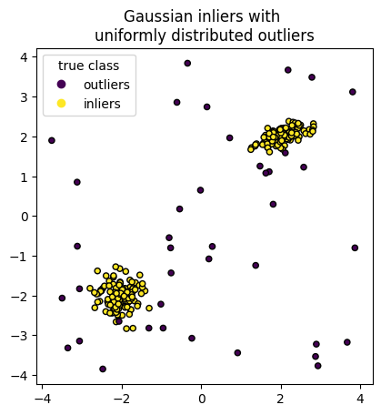
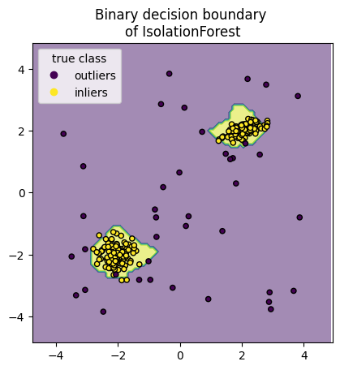

Notebook source code: notebooks/place_cells/28_remove_outliers.ipynb
Remove outliers from neural activation dataset#
We remove outliers from the binned data, to lower the probability that outliers drive the spikes in the curvature profile observed in expt 34 and expt 41.
We use isolation forests, implemented in scikit-learn.
https://scikit-learn.org/stable/auto_examples/ensemble/plot_isolation_forest.html
Set up#
In [1]:
import os
import subprocess
gitroot_path = subprocess.check_output(
["git", "rev-parse", "--show-toplevel"], universal_newlines=True
)
os.chdir(os.path.join(gitroot_path[:-1], "neurometry"))
print("Working directory: ", os.getcwd())
import warnings
warnings.filterwarnings("ignore")
import sys
sys_dir = os.path.dirname(os.getcwd())
sys.path.append(sys_dir)
print("Directory added to path: ", sys_dir)
sys.path.append(os.getcwd())
print("Directory added to path: ", os.getcwd())
Working directory: /home/nmiolane/code/neurometry/neurometry
Directory added to path: /home/nmiolane/code/neurometry
Directory added to path: /home/nmiolane/code/neurometry/neurometry
Isolation Forest#
The code below has been copy-pasted from scikit-learn example.
It should be adapted to our binned data. It should be run in parallel (joblib) to preprocess all binned data across experiments.
In [3]:
import numpy as np
from sklearn.model_selection import train_test_split
n_samples, n_outliers = 120, 40
rng = np.random.RandomState(0)
covariance = np.array([[0.5, -0.1], [0.7, 0.4]])
cluster_1 = 0.4 * rng.randn(n_samples, 2) @ covariance + np.array([2, 2]) # general
cluster_2 = 0.3 * rng.randn(n_samples, 2) + np.array([-2, -2]) # spherical
outliers = rng.uniform(low=-4, high=4, size=(n_outliers, 2))
X = np.concatenate([cluster_1, cluster_2, outliers])
y = np.concatenate(
[np.ones((2 * n_samples), dtype=int), -np.ones((n_outliers), dtype=int)]
)
X_train, X_test, y_train, y_test = train_test_split(X, y, stratify=y, random_state=42)
In [4]:
import matplotlib.pyplot as plt
scatter = plt.scatter(X[:, 0], X[:, 1], c=y, s=20, edgecolor="k")
handles, labels = scatter.legend_elements()
plt.axis("square")
plt.legend(handles=handles, labels=["outliers", "inliers"], title="true class")
plt.title("Gaussian inliers with \nuniformly distributed outliers")
plt.show()

In [5]:
from sklearn.ensemble import IsolationForest
clf = IsolationForest(max_samples=100, random_state=0)
clf.fit(X_train)
Out [5]:
IsolationForest(max_samples=100, random_state=0)In a Jupyter environment, please rerun this cell to show the HTML representation or trust the notebook.
On GitHub, the HTML representation is unable to render, please try loading this page with nbviewer.org.
IsolationForest(max_samples=100, random_state=0)
In [6]:
import matplotlib.pyplot as plt
from sklearn.inspection import DecisionBoundaryDisplay
disp = DecisionBoundaryDisplay.from_estimator(
clf,
X,
response_method="predict",
alpha=0.5,
)
disp.ax_.scatter(X[:, 0], X[:, 1], c=y, s=20, edgecolor="k")
disp.ax_.set_title("Binary decision boundary \nof IsolationForest")
plt.axis("square")
plt.legend(handles=handles, labels=["outliers", "inliers"], title="true class")
plt.show()

In [ ]: